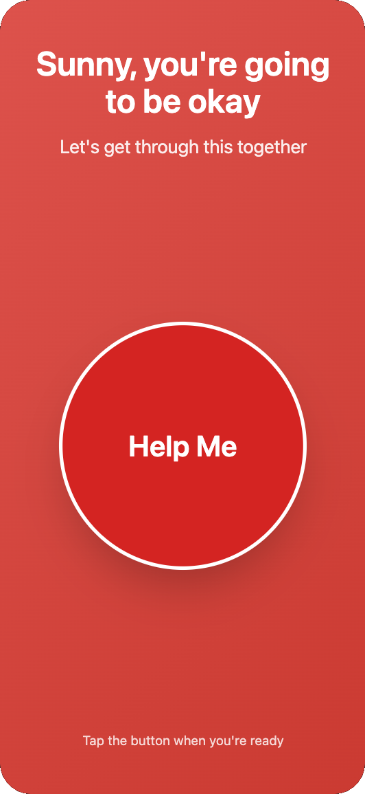
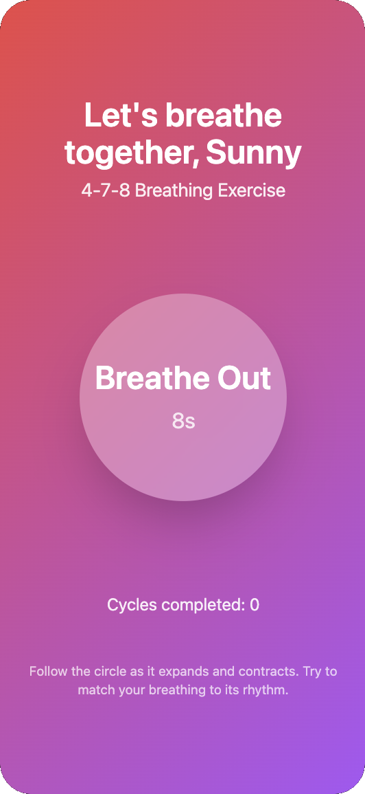
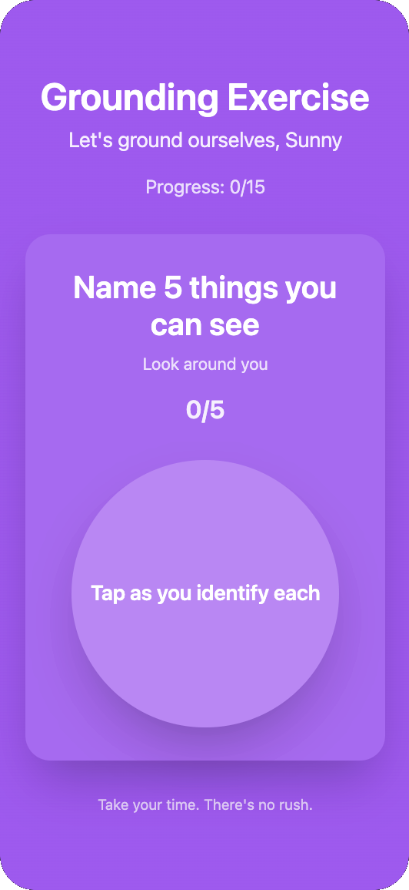
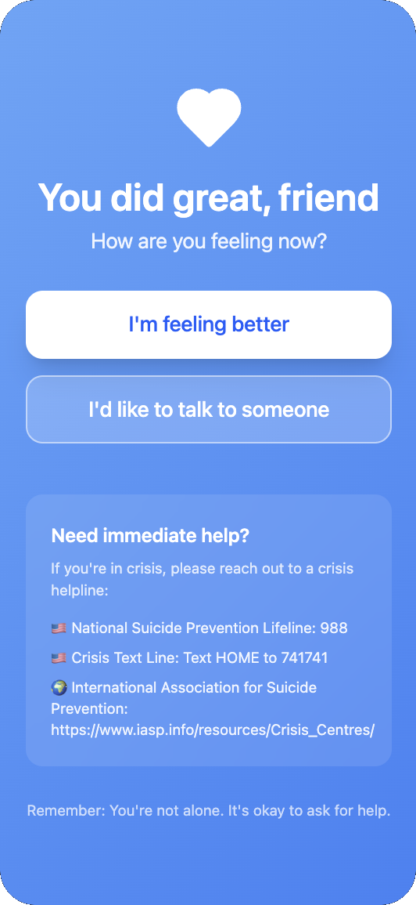

A mobile-first panic support product built for moments of acute distress, designed to deliver immediate guidance in under three seconds through one clear recovery flow.
pyeon is an MVP focused on high-cognitive-load moments when users cannot evaluate multiple options. The product removes navigation friction and gives immediate support through a single path: breathing, grounding, then check-in.
The MVP is intentionally scoped to mobile, local data storage, and core intervention reliability. Launch readiness is measured through behavioral outcomes, not only screen completion.
Problem Framing
The Discovery
Panic episodes create high cognitive load, so users often cannot think clearly enough to choose from feature-heavy wellness menus. The crisis context demands immediate direction rather than exploration.
The Market Gap
Existing apps often assume calm cognition and introduce navigation cost during the exact moment users need minimal decisions. The core gap is a zero-friction, first-action experience.
The Vision
Design one guided path that starts in under three seconds and transitions users from alert red to calm blue: 4-7-8 breathing, 5-4-3-2-1 grounding, then emotional check-in.
Constraints
Mobile-first MVP with no backend and local-only data persistence.
Must work offline with stable performance on iOS and Android.
Scope excludes accounts, cloud sync, and non-critical feature breadth.
Success Criteria
Under 3 seconds from app open to first action.
Over 60% completion rate of breathing -> grounding -> check-in flow.
Over 70% of users self-report feeling calmer post-session.
User Transformation
Before
During a panic episode
Overwhelmed and unable to think clearly
Searching for the right tool or technique
Rising physical symptoms and racing thoughts
Too many choices increase cognitive load
Anxiety continues to escalate
After
With pyeon
Immediate one-tap access to support
Guided breathing reduces physiological stress
Structured grounding restores present awareness
Calm color transitions signal nervous system regulation
User regains a sense of control and safety
Product & Design Thinking
User Segments
Primary: people experiencing acute anxiety or panic who need immediate support.
Secondary: users who prefer structured, low-reading interventions over broad content libraries.
Research & Insights
4-7-8 breathing selected for clear pacing and repeatable regulation.
5-4-3-2-1 grounding selected as evidence-based sensory anchoring.
Red -> purple -> blue progression used as emotional and cognitive wayfinding.
Accessibility baseline includes VoiceOver/TalkBack support and WCAG AA contrast.
Execution (Design to Build)
Design
The MVP experience is intentionally constrained: one high-contrast action, guided pacing, and progressive check-in states. The flow removes choice overload while keeping user agency through clear continuation points.

Help — one-tap support

Breathe — guided regulation

Ground — 5 senses grounding

Complete — check-in + next step
Engineering
React Native implementation for one codebase across iOS and Android.
Local-only storage model (no backend) for MVP speed, privacy, and reliability.
Session logging designed for completion and outcome tracking.